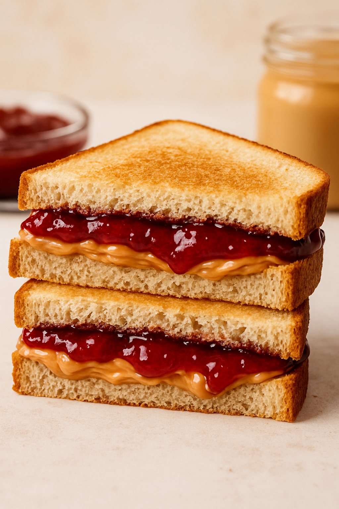

Peanut Butter & Jelly Sandiwch

Description:
The Peanut butter & Jelly sandwich is a staple. Whether it is a busy morning brekfast, an evening snack, or a midday craving, a pb&j will not only satisfy your stomach but your taste buds too.
this one is a pretty simple and straight forward recipe, so I hope you enjoy.
Ingredients:
- 2 slices of bread of your choice
- Helly of your choice (grape jelly is what we have opted to use)
- peanut butter
Steps:
- First take your 2 slices of bread and either toast them in a toaster or toast them on a medium to high heat pan until the bread has some gloden brown color to it.
- Spread a thick layer of peanut butter on one slice of the bread (a butter knife will probably make this an easier task.)
- Spread the jelly on the other slice of toast and also make sure there is a thick layer of it (a spoon is probably the best way to do this.)
- Finally, put your 2 slice of toast together and voila, you have yourself the perfect crunchy and tasty peanut butter & jelly sandwich.
Home